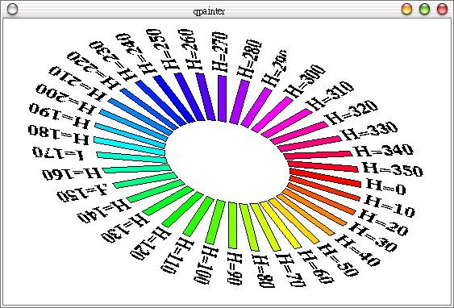

QPainter預設的座標系統是繪圖裝置的座標系統，也就是向右為正X，向下為正Y的座標系統，而QWMatrix可以讓您進行一些2D座標系統的轉換動作。
以下翻譯自Qt的線上說明文件：
QWMatrix類別包括了一個3X3的矩陣：
m11 m12 0
m21 m22 0
dx dy 1
這個座標可以將平面上的一點轉換至另一個點：
x' = m11*x + m21*y + dx
y' = m22*y + m12*x + dy
(x, y)是原來的點，而(x', y')是轉換後的點，它也可以藉由反矩陣運算被轉換回(x, y)。
dx與dy定義了水平與垂直轉換，m11與m22定義了水平與垂直縮放，m12與m21定義了垂直與水平扭曲（shearing）。
m11與m22被設定為1而其它被設定為0時，這樣的矩陣可以對應至原來的點，這樣的矩陣被稱之為identity matrix。
移動是最簡單的轉換，設定dx與dy可以將座標系統沿X軸移動dx單位，沿Y軸移動dy單位。
縮放可以藉由設定m11與m22來達成，例如將m11設定為2而m22設定為1.5，這可以使高增2倍而寬增為1.5倍。
扭曲是由m12與m21來控制，將這兩個值設定為不等於0的值可以扭曲座標系統。
旋轉是藉由小心的設定扭曲與縮放因子來達成，QWMatrix也有一個函式可以直接來定旋轉效果。
在Qt的線上範例中，有一個drawdemo範例，當中有色彩輪的繪製，我們藉由設定HSV（Brightness,Hue, Saturation）中的「色相」來完成彩虹般的效果。
HSV中的「色相」（Hue）是錂鏡分光，主要有紅、橙、黃、綠、藍、紫...等八個主要色相。「亮度」（Brightness）是明暗表現，由白至黑的
表現，在P.C.C.S（Practical Color Coordinate
System）配色系統中，將之分為白、淺灰（淺，深）、淺中灰、中灰、暗中灰、暗灰（淺，深）、黑等。「彩度」(Saturation)也就是色彩的飽
和程度，彩度最高的稱之為「純色」，最低為「無顏色」。
以下的範例將drawdemo範例中的色彩輪獨立出來撰寫，座標系統的轉換方法都已加上的註解：
#include <qapplication.h>
#include <qwidget.h>
#include <qpainter.h>
#include <qpen.h>
#include <qpixmap.h>
#include <qdrawutil.h>
class DrawView : public QWidget {
public:
DrawView() {
setBackgroundColor(white);
}
protected:
void drawColorWheel(QPainter*);
void paintEvent(QPaintEvent*);
};
void DrawView::drawColorWheel(QPainter *p) {
QFont f("times", 18, QFont::Bold);
p->setFont(f);
p->setPen(Qt::black);
p->setWindow(0, 0, 500, 500); // defines coordinate system
for (int i = 0; i < 36; i++) { // draws 36 rotated rectangles
QWMatrix matrix;
matrix.translate(250.0F, 250.0F); // move to center
matrix.shear(0.0F, 0.3F); // twist it
matrix.rotate((float)i*10); // rotate 0,10,20,.. degrees
p->setWorldMatrix(matrix); // use this world matrix
QColor c;
c.setHsv(i*10, 255, 255); // rainbow effect
p->setBrush(c); // solid fill with color c
p->drawRect(70, -10, 80, 10); // draw the rectangle
QString n;
n.sprintf("H=%d", i*10);
p->drawText(80+70+5, 0, n); // draw the hue number
}
}
void DrawView::paintEvent(QPaintEvent*) {
QPainter p(this);
drawColorWheel(&p);
}
int main(int argc, char **argv) {
QApplication app(argc, argv);
DrawView draw;
app.setMainWidget(&draw);
draw.show();
return app.exec();
}
下圖為執行的結果畫面：

|
|